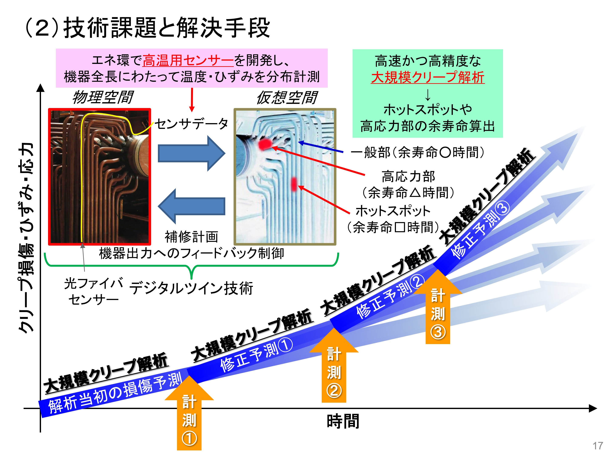

TOPICS
2019年9月17日
- 報告
プレスリリース：柴原研究室が共同開発している「従来法での計測不能領域を革新的手法により計測可能にする産業プロセス用センサー」がNEDO エネルギー･環境新技術先導研究プログラムに採択されました。
- プレスリリース：柴原研究室が共同開発している「従来法での計測不能領域を革新的手法により計測可能にする産業プロセス用センサー」がNEDO エネルギー･環境新技術先導研究プログラムに採択されました。
2019/09/17
超高温設備の革新的オンライン監視システムの技術開発を開始
―「従来法での計測不能領域を革新的手法により計測可能にする産業プロセス用センサー」の開発がNEDO エネルギー･環境新技術先導研究プログラムに採択―
柴原研究室、一般財団法人 電力中央研究所（以下、電中研）、中国電力 株式会社（以下、中国電力）、北海道電力 株式会社（以下、北海道電力）、 沖電気工業 株式会社（以下、OKI）、非破壊検査 株式会社（以下、非破壊検査）は、国立研究開発法人 新エネルギー･産業技術総合開発機構（以下、NEDO）の委託事業である「エネルギー・環境新技術先導研究プログラム」の研究開発項目の一つである「従来法での計測不能領域を革新的手法により計測可能にする産業プロセス用センサー」の開発に採択され、それぞれの企業にて、9/20にプレスリリース(報道発表)が行なわれました。
本研究開発では、次世代火力発電プラントの配管や化学プラントの反応装置などの750度以上の高温下における温度・ひずみ・AE（解説1）計測技術や、光ファイバセンサー用リアルタイム信号処理技術、実構造物の高速クリープ解析技術の開発を行います。
府大HPプレスリリース内容：
https://www.osakafu-u.ac.jp/press-release/pr20190917/

投稿日時：2019年9月17日 01:46 投稿者：柴原 正和